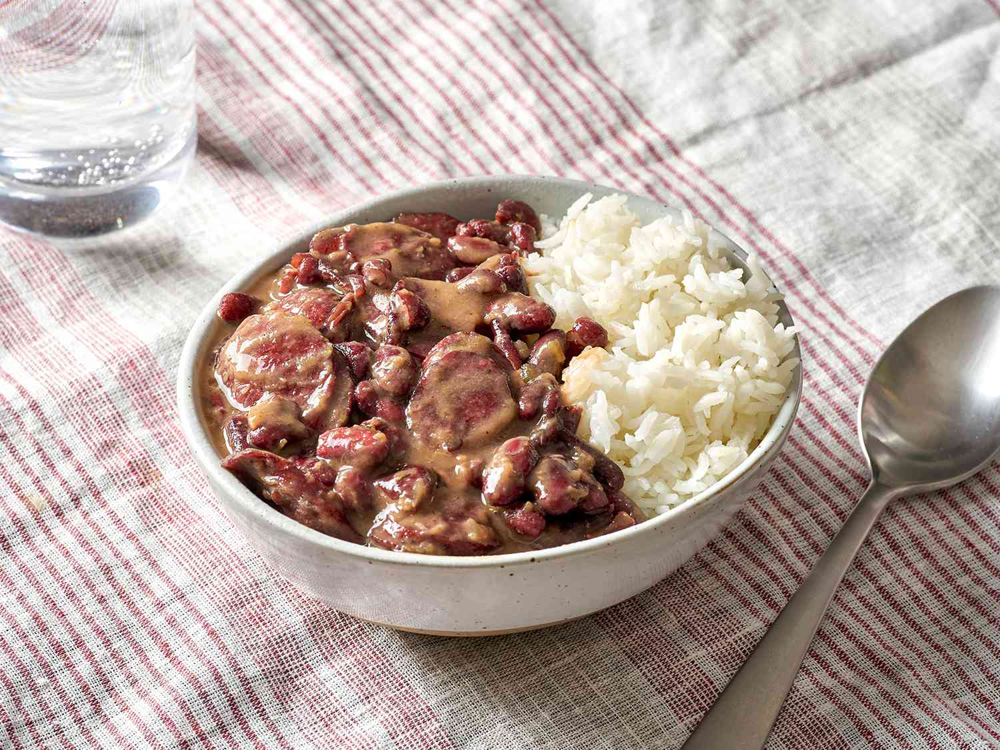

Louisiana Style Red Beans and Rice

Description
Embark on a flavor journey with New Orleans-style red beans and rice, a dish that transcends its simple ingredients to deliver a mind-bendingly delicious experience
Take a leap into this soul-satisfying creation, where each bite tells a story of comfort, tradition, and the vibrant spirit of New Orleans.
KEY INGREDIENTS
- 1 pound(450g) red kidney beans
- Kosher salt
- 1 pound(about 450g) cooked anouille sausage, cut into 1/2-inch disks
- 1 large onion, finely chopped(about 12 ounces; 340g)
- 1 green bell pepper, stemmed, seeded, and finely chopped(about 8 ounces; 225g)
- 4 ribs celery, finely chopped(about 8 ounces; 225g)
- 4 medium cloves garlic, minced
- 1/2 teaspoon to 1 tablespoon(3 to 15g) ground cayenne pepper(depending on how hot you like it)
- 1 teaspoon(about 4g) ground sage
- Freshly ground black pepper
- 1 smoked ham hock(optional)
- 8 ounces(225g) pickled pork shoulder or rind(optional)
- 4 sprigs fresh thyme
- 3 bay leaves
- Hot sauce, such as Crystal or Frank's, to taste
- Cooked white rice, for serving